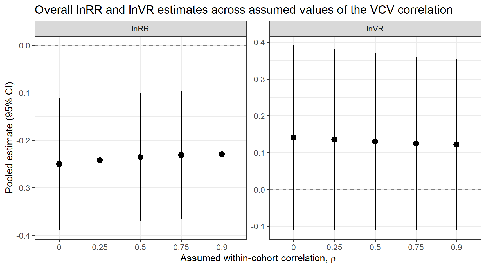
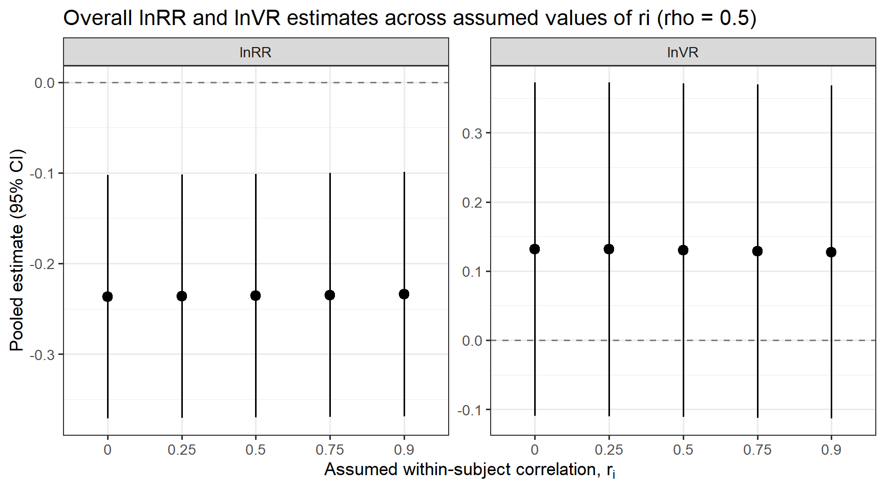
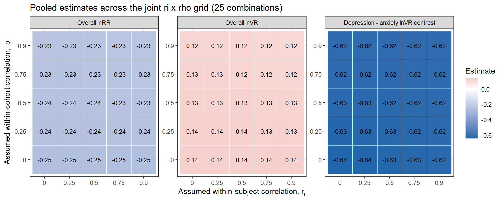

db <- readr::read_csv(here("..","data","db_effect_sizes.csv")) %>%
mutate(across(where(is.character), as.factor)) %>%
mutate(across(c(lnRR, lnRR_var, lnVR, lnVR_var, lnCVR, lnCVR_var), as.numeric))Appendix A — Sensitivity analysis to the assumed within-study correlation
The overall-effect and moderator models (see overall_effect.qmd and uni_moderators.qmd) build a cohort-level variance–covariance (VCV) matrix with metafor::vcalc(), assuming a within-cohort correlation of rho = 0.5 between sampling errors of different effect sizes measured on the same cohort of animals (Cohort_ID), whenever the true within-cohort correlation is not reported by the primary study. A separate but numerically identical value, ri = 0.5, is used inside calculate_lnRR(), calculate_lnVR(), and calculate_lnCVR() (see effect_size_calculation.qmd) as the assumed within-subject correlation for the sampling-variance formulas of dependent (paired / repeated-measures) comparisons (Comparison_structure == "Dependent", metafor::escalc(measure = "ROMC"/"VRC"/"CVRC", ri = 0.5)). These are two conceptually distinct correlation parameters that happen to share the same assumed value of 0.5 by convention:
- Cross-effect-size correlation (
vcalc(rho = ...)): the assumed correlation between the sampling errors of different effect sizes drawn from the same cohort of animals (e.g., two behavioural outcomes measured on the same group). This affects the off-diagonal covariances of the VCV matrixVused in everyrma.mv()call, for any cohort contributing more than one effect size (57 of the dataset’s cohorts contribute more than one outcome). - Within-subject/within-comparison correlation (
escalc(ri = ...)): the assumed correlation between the treatment and control measurements of a single dependent (paired/repeated-measures) comparison. This affects only the sampling-variance formula of that one effect size, and in the current database applies to the 40 effect sizes (all from a single study,Sampaio_2017_PSYNEURO, a within-subject design measured at four life stages) codedComparison_structure == "Dependent".
This appendix runs a sensitivity analysis on both parameters. It first varies parameter (1), the cross-effect-size correlation used to build the VCV matrix for the overall lnRR and lnVR models, because that is the correlation that structures the variance–covariance matrix referenced in the manuscript and by reviewers. It then (further down, in “Recomputing sampling variances across the assumed within-subject correlation”) varies parameter (2) as well, by recomputing the sampling variances of the 40 Comparison_structure == "Dependent" rows directly from the raw extraction database (data/db251124.csv) across a range of assumed values of ri, and finally crosses both parameters in a joint ri x rho grid.
Refitting the overall models across a range of assumed correlations
We refit the same intercept-only multilevel models used in overall_effect.qmd (random intercepts for Study_ID, ES_ID, and Strain; REML; test = "t"), varying only the rho argument passed to vcalc() when constructing the VCV matrix. We evaluate rho = 0.00, 0.25, 0.50, 0.75, 0.90, spanning independence (rho = 0) to a strong assumed within-cohort correlation (rho = 0.90).
rho_values <- c(0.00, 0.25, 0.50, 0.75, 0.90)
fit_overall_mv <- function(dat, yi, vi, rho) {
dat2 <- dat %>%
filter(!is.na(.data[[yi]]), !is.na(.data[[vi]]))
VCV <- metafor::vcalc(
vi = dat2[[vi]],
cluster = dat2$Cohort_ID,
obs = dat2$ES_ID,
rho = rho,
data = dat2
)
mod <- metafor::rma.mv(
yi = dat2[[yi]],
V = VCV,
random = list(
~1 | Study_ID,
~1 | ES_ID,
~1 | Strain
),
test = "t",
method = "REML",
sparse = TRUE,
data = dat2
)
list(data = dat2, VCV = VCV, model = mod)
}
overall_sensitivity <- purrr::map_dfr(rho_values, function(r) {
fit_rr <- fit_overall_mv(db, "lnRR", "lnRR_var", r)
fit_vr <- fit_overall_mv(db, "lnVR", "lnVR_var", r)
i2_rr <- orchaRd::i2_ml(fit_rr$model)
i2_vr <- orchaRd::i2_ml(fit_vr$model)
dplyr::bind_rows(
tibble::tibble(
metric = "lnRR",
rho = r,
k = fit_rr$model$k,
estimate = as.numeric(coef(fit_rr$model)),
se = fit_rr$model$se,
ci.lb = fit_rr$model$ci.lb,
ci.ub = fit_rr$model$ci.ub,
tval = fit_rr$model$zval,
pval = fit_rr$model$pval,
sigma2_Study = fit_rr$model$sigma2[1],
sigma2_ES = fit_rr$model$sigma2[2],
sigma2_Strain = fit_rr$model$sigma2[3],
I2_Total = i2_rr[["I2_Total"]],
I2_Study_ID = i2_rr[["I2_Study_ID"]],
I2_ES_ID = i2_rr[["I2_ES_ID"]],
I2_Strain = i2_rr[["I2_Strain"]]
),
tibble::tibble(
metric = "lnVR",
rho = r,
k = fit_vr$model$k,
estimate = as.numeric(coef(fit_vr$model)),
se = fit_vr$model$se,
ci.lb = fit_vr$model$ci.lb,
ci.ub = fit_vr$model$ci.ub,
tval = fit_vr$model$zval,
pval = fit_vr$model$pval,
sigma2_Study = fit_vr$model$sigma2[1],
sigma2_ES = fit_vr$model$sigma2[2],
sigma2_Strain = fit_vr$model$sigma2[3],
I2_Total = i2_vr[["I2_Total"]],
I2_Study_ID = i2_vr[["I2_Study_ID"]],
I2_ES_ID = i2_vr[["I2_ES_ID"]],
I2_Strain = i2_vr[["I2_Strain"]]
)
)
})overall_sensitivity %>%
mutate(across(where(is.numeric), ~round(., 4))) %>%
kable() %>%
kable_styling(full_width = TRUE, bootstrap_options = c("striped", "condensed")) %>%
scroll_box(width = "100%")| metric | rho | k | estimate | se | ci.lb | ci.ub | tval | pval | sigma2_Study | sigma2_ES | sigma2_Strain | I2_Total | I2_Study_ID | I2_ES_ID | I2_Strain |
|---|---|---|---|---|---|---|---|---|---|---|---|---|---|---|---|
| lnRR | 0.00 | 298 | -0.2500 | 0.0707 | -0.3892 | -0.1109 | -3.5359 | 0.0005 | 0.0720 | 0.2141 | 0 | 96.5974 | 24.3211 | 72.2763 | 0 |
| lnVR | 0.00 | 222 | 0.1406 | 0.1275 | -0.1106 | 0.3919 | 1.1032 | 0.2711 | 0.1418 | 1.1561 | 0 | 92.2135 | 10.0743 | 82.1393 | 0 |
| lnRR | 0.25 | 298 | -0.2420 | 0.0690 | -0.3779 | -0.1061 | -3.5057 | 0.0005 | 0.0647 | 0.2155 | 0 | 96.5290 | 22.2884 | 74.2406 | 0 |
| lnVR | 0.25 | 222 | 0.1356 | 0.1250 | -0.1107 | 0.3819 | 1.0849 | 0.2792 | 0.1185 | 1.1978 | 0 | 92.3144 | 8.3110 | 84.0033 | 0 |
| lnRR | 0.50 | 298 | -0.2357 | 0.0683 | -0.3701 | -0.1013 | -3.4506 | 0.0006 | 0.0598 | 0.2231 | 0 | 96.5608 | 20.4199 | 76.1410 | 0 |
| lnVR | 0.50 | 222 | 0.1304 | 0.1224 | -0.1108 | 0.3716 | 1.0653 | 0.2879 | 0.0963 | 1.2391 | 0 | 92.4156 | 6.6662 | 85.7494 | 0 |
| lnRR | 0.75 | 298 | -0.2311 | 0.0682 | -0.3653 | -0.0969 | -3.3901 | 0.0008 | 0.0565 | 0.2353 | 0 | 96.6620 | 18.7095 | 77.9525 | 0 |
| lnVR | 0.75 | 222 | 0.1250 | 0.1197 | -0.1109 | 0.3609 | 1.0439 | 0.2977 | 0.0750 | 1.2798 | 0 | 92.5163 | 5.1243 | 87.3920 | 0 |
| lnRR | 0.90 | 298 | -0.2292 | 0.0683 | -0.3636 | -0.0948 | -3.3563 | 0.0009 | 0.0549 | 0.2448 | 0 | 96.7469 | 17.7337 | 79.0132 | 0 |
| lnVR | 0.90 | 222 | 0.1215 | 0.1180 | -0.1110 | 0.3541 | 1.0300 | 0.3041 | 0.0626 | 1.3040 | 0 | 92.5761 | 4.2426 | 88.3335 | 0 |
readr::write_csv(overall_sensitivity, here("..","data","sensitivity_r_overall_results.csv"))Figure: overall estimate and 95% CI across rho
p_sensitivity <- overall_sensitivity %>%
mutate(metric = factor(metric, levels = c("lnRR", "lnVR"))) %>%
ggplot(aes(x = factor(rho), y = estimate)) +
geom_hline(yintercept = 0, linetype = "dashed", colour = "grey50") +
geom_pointrange(aes(ymin = ci.lb, ymax = ci.ub), size = 0.6) +
facet_wrap(~ metric, scales = "free_y") +
labs(
x = expression(paste("Assumed within-cohort correlation, ", rho)),
y = "Pooled estimate (95% CI)",
title = "Overall lnRR and lnVR estimates across assumed values of the VCV correlation"
) +
theme_bw(base_size = 13)
p_sensitivity
ggsave(filename = here("..","Plots", "sensitivity_r_overall.pdf"),
plot = p_sensitivity,
dpi = 300, device = cairo_pdf, width = 9, height = 5)
ggsave(filename = here("..","Plots", "sensitivity_r_overall.jpg"),
plot = p_sensitivity,
width = 9, height = 5, dpi = 300)Anxiety-versus-depression lnVR contrast across rho
The manuscript also reports a depression-minus-anxiety contrast for lnVR (see uni_moderators.qmd, “Outcome type” section). We check whether that contrast, and the two subgroup pooled estimates it is built from, are sensitive to the assumed correlation. We reuse the same k >= 5 level-filtering rule applied in uni_moderators.qmd (the both level of Outcome_type, k = 3, is dropped).
db_vr <- db %>% filter(!is.na(lnVR), !is.na(lnVR_var))
k_counts <- db_vr %>% count(Outcome_type)
keep_levels <- k_counts %>% filter(n >= 5) %>% pull(Outcome_type)
dat_f <- db_vr %>%
filter(Outcome_type %in% keep_levels) %>%
mutate(Outcome_type = droplevels(Outcome_type))
contrast_sensitivity <- purrr::map_dfr(rho_values, function(r) {
VCV <- metafor::vcalc(
vi = dat_f$lnVR_var, cluster = dat_f$Cohort_ID, obs = dat_f$ES_ID,
rho = r, data = dat_f
)
mod <- metafor::rma.mv(
yi = dat_f$lnVR, V = VCV,
mods = ~ Outcome_type,
random = list(~1 | Study_ID, ~1 | ES_ID, ~1 | Strain),
test = "t", method = "REML", sparse = TRUE, data = dat_f
)
cf <- coef(summary(mod))
tibble::tibble(
rho = r,
anxiety_est = cf["intrcpt", "estimate"],
anxiety_ci.lb = cf["intrcpt", "ci.lb"],
anxiety_ci.ub = cf["intrcpt", "ci.ub"],
anxiety_pval = cf["intrcpt", "pval"],
depression_est = cf["intrcpt", "estimate"] + cf["Outcome_typeDepression", "estimate"],
contrast_est = cf["Outcome_typeDepression", "estimate"],
contrast_ci.lb = cf["Outcome_typeDepression", "ci.lb"],
contrast_ci.ub = cf["Outcome_typeDepression", "ci.ub"],
contrast_tval = cf["Outcome_typeDepression", "tval"],
contrast_pval = cf["Outcome_typeDepression", "pval"]
)
})contrast_sensitivity %>%
mutate(across(where(is.numeric), ~round(., 4))) %>%
kable() %>%
kable_styling(full_width = TRUE, bootstrap_options = c("striped", "condensed"))| rho | anxiety_est | anxiety_ci.lb | anxiety_ci.ub | anxiety_pval | depression_est | contrast_est | contrast_ci.lb | contrast_ci.ub | contrast_tval | contrast_pval |
|---|---|---|---|---|---|---|---|---|---|---|
| 0.00 | 0.3135 | 0.0164 | 0.6106 | 0.0387 | -0.3208 | -0.6343 | -1.0682 | -0.2003 | -2.8806 | 0.0044 |
| 0.25 | 0.3088 | 0.0144 | 0.6032 | 0.0399 | -0.3204 | -0.6293 | -1.0635 | -0.1950 | -2.8558 | 0.0047 |
| 0.50 | 0.3041 | 0.0122 | 0.5959 | 0.0412 | -0.3201 | -0.6242 | -1.0586 | -0.1897 | -2.8317 | 0.0051 |
| 0.75 | 0.2992 | 0.0099 | 0.5886 | 0.0428 | -0.3198 | -0.6190 | -1.0535 | -0.1845 | -2.8081 | 0.0054 |
| 0.90 | 0.2963 | 0.0083 | 0.5842 | 0.0438 | -0.3197 | -0.6159 | -1.0504 | -0.1815 | -2.7942 | 0.0057 |
readr::write_csv(contrast_sensitivity, here("..","data","sensitivity_r_anxiety_depression_contrast.csv"))Interpretation
Across the entire plausible range tested (rho = 0 to rho = 0.90):
- The overall lnRR estimate stays negative and statistically significant (point estimate moves only from about -0.25 at
rho = 0to about -0.23 atrho = 0.90; the 95% CI excludes zero at every value ofrho). The substantive conclusion — that music exposure is associated with a reduction in anxiety-/depression-like behaviour — is not sensitive to the assumed within-cohort correlation. - The overall lnVR estimate stays small and its 95% CI includes zero at every value of
rhotested. The conclusion that there is no strong overall evidence for a change in behavioural variability under music exposure is likewise not sensitive torho. - The depression-minus-anxiety lnVR contrast remains negative and materially unchanged in magnitude (approximately -0.63 to -0.62 across the tested range) and remains statistically significant at every value of
rho; the anxiety-specific pooled lnVR remains positive and nominally significant atrho <= 0.75, while the depression-specific pooled lnVR remains negative and non-significant throughout. The qualitative pattern reported in the manuscript (higher behavioural variability under music for anxiety-like outcomes than for depression-like outcomes) is not driven by the specific choice ofrho = 0.5.
Increasing rho mechanically increases the assumed covariance between effect sizes sharing a cohort, which is absorbed mainly by a decrease in the ES_ID-level variance component and a modest narrowing of the standard errors of the pooled estimates; it does not change which cohorts or studies dominate the fit, and it does not alter the sign or statistical conclusion of the overall or contrast estimates reported here.
Recomputing sampling variances across the assumed within-subject correlation (\(r_i\))
ri = 0.5 is used inside calculate_lnRR(), calculate_lnVR(), and calculate_lnCVR() (effect_size_calculation.qmd) as the assumed within-subject correlation between the treatment and control measurements of a dependent (paired / repeated-measures) comparison, via metafor::escalc(measure = "ROMC"/"VRC"/"CVRC", ri = 0.5, ...). Only rows coded Comparison_structure == "Dependent" are affected. We re-confirm directly from the raw extraction database that this applies to exactly 40 of the dataset’s 298 rows, and that all 40 come from a single study:
db_raw_check <- readr::read_csv(here("..","data","db251124.csv"), show_col_types = FALSE)
table(db_raw_check$Comparison_structure)
Dependent Independent
40 258 db_raw_check %>%
filter(Comparison_structure == "Dependent") %>%
count(Study_ID)# A tibble: 1 × 2
Study_ID n
<chr> <int>
1 Sampaio_2017_PSYNEURO 40Does \(r_i\) change the point estimate or only the sampling variance?
ROMC, VRC, and CVRC are the “correlated / paired-groups” versions of the response-ratio, variability-ratio, and CV-ratio estimators. Algebraically, ri enters only the delta-method sampling-variance formula (through a covariance term that subtracts 2 * ri * sd1i * sd2i / (ni * ...)) and never enters the point-estimate (yi) formula, which depends only on the means and/or SDs of the two groups. We confirm this empirically with a toy comparison, holding all other inputs fixed and varying only ri:
toy <- purrr::map_dfr(c(0.00, 0.25, 0.50, 0.75, 0.90), function(r) {
purrr::map_dfr(c("ROMC", "VRC", "CVRC"), function(m) {
e <- metafor::escalc(measure = m, ni = 12, m1i = 10, m2i = 8, sd1i = 2, sd2i = 1.5, ri = r)
tibble::tibble(measure = m, ri = r, yi = as.numeric(e$yi), vi = as.numeric(e$vi))
})
})
toy %>%
kable(digits = 6, caption = "Point estimate (yi) is constant across ri; only the sampling variance (vi) changes.") %>%
kable_styling(full_width = FALSE, bootstrap_options = c("striped", "condensed"))| measure | ri | yi | vi |
|---|---|---|---|
| ROMC | 0.00 | 0.223345 | 0.006263 |
| VRC | 0.00 | 0.287682 | 0.090909 |
| CVRC | 0.00 | 0.064337 | 0.097172 |
| ROMC | 0.25 | 0.223345 | 0.004701 |
| VRC | 0.25 | 0.287682 | 0.085227 |
| CVRC | 0.25 | 0.064337 | 0.089928 |
| ROMC | 0.50 | 0.223345 | 0.003138 |
| VRC | 0.50 | 0.287682 | 0.068182 |
| CVRC | 0.50 | 0.064337 | 0.071320 |
| ROMC | 0.75 | 0.223345 | 0.001576 |
| VRC | 0.75 | 0.287682 | 0.039773 |
| CVRC | 0.75 | 0.064337 | 0.041348 |
| ROMC | 0.90 | 0.223345 | 0.000638 |
| VRC | 0.90 | 0.287682 | 0.017273 |
| CVRC | 0.90 | 0.064337 | 0.017911 |
As expected, yi is identical across ri for all three measures, while vi decreases monotonically as ri increases. This means that varying ri can only ever change the sampling variances (lnRR_var, lnVR_var, lnCVR_var) of the 40 dependent rows – never their point estimates (lnRR, lnVR, lnCVR) – and, by extension, can only change the pooled models through the weights it assigns to those 40 rows in the VCV/random-effects fit, not through the effect sizes themselves.
Recomputing the 40 dependent-row sampling variances
We reproduce the same preprocessing that effect_size_calculation.qmd applies before calling escalc() – SD imputation from SE where missing, and the apply_continuity_within_group() continuity correction (stratified by Assay_type x Measurment_variable x Data_type, applied to the full raw database so that the stratum-level epsilon constants match the ones used to build data/db_effect_sizes.csv) – and then recompute lnRR_var, lnVR_var, and lnCVR_var for the 40 Comparison_structure == "Dependent" rows only, at ri = 0.00, 0.25, 0.50, 0.75, 0.90. Point estimates (lnRR, lnVR, lnCVR) and every value for the 258 independent-comparison rows are always taken unchanged from data/db_effect_sizes.csv, consistent with the result above that ri cannot affect them.
Code
db_raw_ri <- readr::read_csv(here("..","data","db251124.csv"), show_col_types = FALSE) %>%
mutate(
across(c(C_n, Ex_n, C_mean, Ex_mean, C_SE, Ex_SE, C_SD, Ex_SD), as.numeric),
Data_type = tolower(as.character(Data_type)),
Comparison_structure = as.character(Comparison_structure),
Higher_better = as.character(Higher_better)
) %>%
mutate(
C_SD = ifelse(is.na(C_SD) & !is.na(C_SE) & !is.na(C_n), C_SE * sqrt(C_n), C_SD),
Ex_SD = ifelse(is.na(Ex_SD) & !is.na(Ex_SE) & !is.na(Ex_n), Ex_SE * sqrt(Ex_n), Ex_SD)
) %>%
mutate(Cohort_ID = paste(Study_ID, Ex_ID, sep = "_"))
dep_ids_ri <- db_raw_ri %>% filter(Comparison_structure == "Dependent") %>% pull(ES_ID)
min_pos_ri <- function(x) {
x <- x[is.finite(x) & !is.na(x) & x > 0]
if (length(x) == 0) return(NA_real_)
min(x)
}
apply_continuity_within_group_ri <- function(dt,
strata = c("Assay_type", "Measurment_variable", "Data_type"),
mult = 0.9) {
dt <- dt %>%
mutate(
Data_type = tolower(as.character(Data_type)),
across(c(C_mean, Ex_mean, C_SD, Ex_SD), ~as.numeric(as.character(.)))
)
mins <- dt %>%
group_by(across(all_of(strata))) %>%
summarise(
min_C_mean_pos = min_pos_ri(C_mean),
min_Ex_mean_pos = min_pos_ri(Ex_mean),
.groups = "drop"
)
g_C_mean <- min_pos_ri(dt$C_mean)
g_Ex_mean <- min_pos_ri(dt$Ex_mean)
dt %>%
left_join(mins, by = strata) %>%
mutate(
eps_C_mean = mult * coalesce(min_C_mean_pos, g_C_mean),
eps_Ex_mean = mult * coalesce(min_Ex_mean_pos, g_Ex_mean),
C_mean = ifelse(!is.na(C_mean) & C_mean == 0, eps_C_mean, C_mean),
Ex_mean = ifelse(!is.na(Ex_mean) & Ex_mean == 0, eps_Ex_mean, Ex_mean),
C_SD = ifelse(!is.na(C_SD) & C_SD == 0, 0.05, C_SD),
Ex_SD = ifelse(!is.na(Ex_SD) & Ex_SD == 0, 0.05, Ex_SD)
) %>%
select(-min_C_mean_pos, -min_Ex_mean_pos, -eps_C_mean, -eps_Ex_mean)
}Code
recompute_dependent_var <- function(ri_val) {
dt <- db_raw_ri %>% mutate(Data_type = tolower(as.character(Data_type)))
dt_nonperc <- dt %>%
filter(!Data_type %in% c("percentage")) %>%
apply_continuity_within_group_ri()
dt_perc <- dt %>%
filter(Data_type %in% c("percentage")) %>%
mutate(
C_mean = ifelse(C_mean == 0, 0.5, C_mean),
Ex_mean = ifelse(Ex_mean == 0, 0.5, Ex_mean),
C_mean = ifelse(C_mean == 100, 99.5, C_mean),
Ex_mean = ifelse(Ex_mean == 100, 99.5, Ex_mean),
C_SD = ifelse(C_SD == 0, 0.5, C_SD),
Ex_SD = ifelse(Ex_SD == 0, 0.5, Ex_SD)
)
asin_trans <- function(p) asin(sqrt(p))
# lnRR_var: ROMC for continuous data types, manual paired-CV formula for percentage data
d1 <- dt_nonperc %>%
filter(ES_ID %in% dep_ids_ri, Data_type %in% c("time", "distance", "count", "latency", "index"))
eff1 <- metafor::escalc(
measure = "ROMC", ni = (d1$Ex_n + d1$C_n) / 2, m1i = d1$Ex_mean, m2i = d1$C_mean,
sd1i = d1$Ex_SD, sd2i = d1$C_SD, ri = ri_val, var.names = c("y_", "v_")
)
lnRR_var_nonperc <- tibble(ES_ID = d1$ES_ID, lnRR_var_new = eff1$v_)
d2 <- dt_perc %>% filter(ES_ID %in% dep_ids_ri)
scale_flag <- pmax(d2$Ex_mean, d2$C_mean) > 1
Ex_mean_r <- ifelse(scale_flag, d2$Ex_mean / 100, d2$Ex_mean)
C_mean_r <- ifelse(scale_flag, d2$C_mean / 100, d2$C_mean)
Ex_SD_r <- ifelse(scale_flag, d2$Ex_SD / 100, d2$Ex_SD)
C_SD_r <- ifelse(scale_flag, d2$C_SD / 100, d2$C_SD)
Ex_SD_trans <- sqrt(Ex_SD_r^2 / (4 * Ex_mean_r * (1 - Ex_mean_r)))
C_SD_trans <- sqrt(C_SD_r^2 / (4 * C_mean_r * (1 - C_mean_r)))
Ex_mean_trans <- asin_trans(Ex_mean_r)
C_mean_trans <- asin_trans(C_mean_r)
V_Ex <- Ex_SD_trans^2 * (1 / (Ex_mean_trans^2 * d2$Ex_n))
V_C <- C_SD_trans^2 * (1 / (C_mean_trans^2 * d2$C_n))
lnRR_var_perc <- tibble(ES_ID = d2$ES_ID, lnRR_var_new = V_Ex + V_C - 2 * ri_val * sqrt(V_Ex) * sqrt(V_C))
lnRR_var_out <- bind_rows(lnRR_var_nonperc, lnRR_var_perc)
# lnVR_var: VRC (non-percentage only)
dt_vr <- db_raw_ri %>%
mutate(Data_type = tolower(as.character(Data_type))) %>%
filter(!Data_type %in% c("percentage")) %>%
apply_continuity_within_group_ri()
d3 <- dt_vr %>%
filter(ES_ID %in% dep_ids_ri, Data_type %in% c("time", "distance", "count", "latency", "index"))
eff3 <- metafor::escalc(
measure = "VRC", ni = (d3$Ex_n + d3$C_n) / 2, sd1i = d3$Ex_SD, sd2i = d3$C_SD,
ri = ri_val, var.names = c("y_", "v_")
)
lnVR_var_out <- tibble(ES_ID = d3$ES_ID, lnVR_var_new = eff3$v_)
# lnCVR_var: CVRC (non-percentage only)
d4 <- dt_vr %>%
filter(ES_ID %in% dep_ids_ri, Data_type %in% c("time", "distance", "count", "latency", "index"))
eff4 <- metafor::escalc(
measure = "CVRC", ni = (d4$Ex_n + d4$C_n) / 2, m1i = d4$Ex_mean, m2i = d4$C_mean,
sd1i = d4$Ex_SD, sd2i = d4$C_SD, ri = ri_val, var.names = c("y_", "v_")
)
lnCVR_var_out <- tibble(ES_ID = d4$ES_ID, lnCVR_var_new = eff4$v_)
lnRR_var_out %>%
full_join(lnVR_var_out, by = "ES_ID") %>%
full_join(lnCVR_var_out, by = "ES_ID")
}
ri_values <- c(0.00, 0.25, 0.50, 0.75, 0.90)
# db_for_ri(): start from the analysis-ready effect-size table (db) and substitute only
# the *_var columns for the 40 dependent rows, at the given ri. Point estimates and all
# independent-row values are always taken unchanged from db.
db_for_ri <- function(ri_val) {
sub <- recompute_dependent_var(ri_val) %>% mutate(ES_ID = as.character(ES_ID))
db %>%
mutate(ES_ID_chr = as.character(ES_ID)) %>%
left_join(sub, by = c("ES_ID_chr" = "ES_ID")) %>%
mutate(
lnRR_var = ifelse(!is.na(lnRR_var_new), lnRR_var_new, lnRR_var),
lnVR_var = ifelse(!is.na(lnVR_var_new), lnVR_var_new, lnVR_var),
lnCVR_var = ifelse(!is.na(lnCVR_var_new), lnCVR_var_new, lnCVR_var)
) %>%
select(-ES_ID_chr, -lnRR_var_new, -lnVR_var_new, -lnCVR_var_new)
}Validation check: at ri = 0.5 (the manuscript default), the recomputed sampling variances for the 40 dependent rows must reproduce data/db_effect_sizes.csv’s existing values exactly, since that file was itself built with ri = 0.5.
validation <- recompute_dependent_var(0.5) %>%
mutate(ES_ID = as.character(ES_ID)) %>%
left_join(
db %>% filter(ES_ID %in% dep_ids_ri) %>%
mutate(ES_ID = as.character(ES_ID)) %>%
select(ES_ID, lnRR_var, lnVR_var, lnCVR_var),
by = "ES_ID"
)
tibble::tibble(
column = c("lnRR_var", "lnVR_var", "lnCVR_var"),
all.equal_to_db_effect_sizes = c(
isTRUE(all.equal(validation$lnRR_var_new, validation$lnRR_var, tolerance = 1e-8)),
isTRUE(all.equal(validation$lnVR_var_new[!is.na(validation$lnVR_var_new)],
validation$lnVR_var[!is.na(validation$lnVR_var_new)], tolerance = 1e-8)),
isTRUE(all.equal(validation$lnCVR_var_new[!is.na(validation$lnCVR_var_new)],
validation$lnCVR_var[!is.na(validation$lnCVR_var_new)], tolerance = 1e-8))
)
) %>%
kable(caption = "Validation: recomputed dependent-row sampling variances at ri = 0.5 vs. data/db_effect_sizes.csv.") %>%
kable_styling(full_width = FALSE, bootstrap_options = c("striped", "condensed"))| column | all.equal_to_db_effect_sizes |
|---|---|
| lnRR_var | TRUE |
| lnVR_var | TRUE |
| lnCVR_var | TRUE |
The check passes: the recomputation pipeline exactly reproduces the existing data/db_effect_sizes.csv sampling variances at ri = 0.5, confirming the recomputed variances at other values of ri are directly comparable and attributable to the change in ri alone. (Point estimates are never recomputed here – they are always carried over unchanged from data/db_effect_sizes.csv, which the result above shows is the correct and only defensible choice, since ri cannot affect them.)
Refitting the overall models and the anxiety/depression contrast across \(r_i\) (rho fixed at 0.5)
overall_sensitivity_ri <- purrr::map_dfr(ri_values, function(r) {
dset <- db_for_ri(r)
fit_rr <- fit_overall_mv(dset, "lnRR", "lnRR_var", 0.5)
fit_vr <- fit_overall_mv(dset, "lnVR", "lnVR_var", 0.5)
i2_rr <- orchaRd::i2_ml(fit_rr$model)
i2_vr <- orchaRd::i2_ml(fit_vr$model)
dplyr::bind_rows(
tibble::tibble(
metric = "lnRR",
ri = r,
k = fit_rr$model$k,
estimate = as.numeric(coef(fit_rr$model)),
se = fit_rr$model$se,
ci.lb = fit_rr$model$ci.lb,
ci.ub = fit_rr$model$ci.ub,
tval = fit_rr$model$zval,
pval = fit_rr$model$pval,
sigma2_Study = fit_rr$model$sigma2[1],
sigma2_ES = fit_rr$model$sigma2[2],
sigma2_Strain = fit_rr$model$sigma2[3],
I2_Total = i2_rr[["I2_Total"]],
I2_Study_ID = i2_rr[["I2_Study_ID"]],
I2_ES_ID = i2_rr[["I2_ES_ID"]],
I2_Strain = i2_rr[["I2_Strain"]]
),
tibble::tibble(
metric = "lnVR",
ri = r,
k = fit_vr$model$k,
estimate = as.numeric(coef(fit_vr$model)),
se = fit_vr$model$se,
ci.lb = fit_vr$model$ci.lb,
ci.ub = fit_vr$model$ci.ub,
tval = fit_vr$model$zval,
pval = fit_vr$model$pval,
sigma2_Study = fit_vr$model$sigma2[1],
sigma2_ES = fit_vr$model$sigma2[2],
sigma2_Strain = fit_vr$model$sigma2[3],
I2_Total = i2_vr[["I2_Total"]],
I2_Study_ID = i2_vr[["I2_Study_ID"]],
I2_ES_ID = i2_vr[["I2_ES_ID"]],
I2_Strain = i2_vr[["I2_Strain"]]
)
)
})overall_sensitivity_ri %>%
mutate(across(where(is.numeric), ~round(., 4))) %>%
kable() %>%
kable_styling(full_width = TRUE, bootstrap_options = c("striped", "condensed")) %>%
scroll_box(width = "100%")| metric | ri | k | estimate | se | ci.lb | ci.ub | tval | pval | sigma2_Study | sigma2_ES | sigma2_Strain | I2_Total | I2_Study_ID | I2_ES_ID | I2_Strain |
|---|---|---|---|---|---|---|---|---|---|---|---|---|---|---|---|
| lnRR | 0.00 | 298 | -0.2368 | 0.0683 | -0.3711 | -0.1025 | -3.4689 | 0.0006 | 0.0596 | 0.2224 | 0 | 96.3805 | 20.3657 | 76.0148 | 0 |
| lnVR | 0.00 | 222 | 0.1316 | 0.1225 | -0.1099 | 0.3731 | 1.0740 | 0.2840 | 0.0959 | 1.2404 | 0 | 92.1630 | 6.6126 | 85.5504 | 0 |
| lnRR | 0.25 | 298 | -0.2363 | 0.0683 | -0.3707 | -0.1020 | -3.4614 | 0.0006 | 0.0597 | 0.2227 | 0 | 96.4463 | 20.3828 | 76.0635 | 0 |
| lnVR | 0.25 | 222 | 0.1313 | 0.1225 | -0.1101 | 0.3727 | 1.0719 | 0.2849 | 0.0960 | 1.2401 | 0 | 92.2147 | 6.6246 | 85.5901 | 0 |
| lnRR | 0.50 | 298 | -0.2357 | 0.0683 | -0.3701 | -0.1013 | -3.4506 | 0.0006 | 0.0598 | 0.2231 | 0 | 96.5608 | 20.4199 | 76.1410 | 0 |
| lnVR | 0.50 | 222 | 0.1304 | 0.1224 | -0.1108 | 0.3716 | 1.0653 | 0.2879 | 0.0963 | 1.2391 | 0 | 92.4156 | 6.6662 | 85.7494 | 0 |
| lnRR | 0.75 | 298 | -0.2348 | 0.0684 | -0.3693 | -0.1002 | -3.4340 | 0.0007 | 0.0601 | 0.2236 | 0 | 96.8228 | 20.5060 | 76.3168 | 0 |
| lnVR | 0.75 | 222 | 0.1288 | 0.1223 | -0.1122 | 0.3697 | 1.0532 | 0.2934 | 0.0970 | 1.2373 | 0 | 93.0576 | 6.7661 | 86.2915 | 0 |
| lnRR | 0.90 | 298 | -0.2340 | 0.0684 | -0.3687 | -0.0993 | -3.4185 | 0.0007 | 0.0603 | 0.2241 | 0 | 97.2966 | 20.6429 | 76.6537 | 0 |
| lnVR | 0.90 | 222 | 0.1274 | 0.1221 | -0.1134 | 0.3681 | 1.0427 | 0.2982 | 0.0977 | 1.2357 | 0 | 94.5054 | 6.9232 | 87.5821 | 0 |
readr::write_csv(overall_sensitivity_ri, here("..","data","sensitivity_ri_overall_results.csv"))contrast_sensitivity_ri <- purrr::map_dfr(ri_values, function(r) {
dset <- db_for_ri(r)
db_vr <- dset %>% filter(!is.na(lnVR), !is.na(lnVR_var))
k_counts <- db_vr %>% count(Outcome_type)
keep_levels <- k_counts %>% filter(n >= 5) %>% pull(Outcome_type)
dat_f <- db_vr %>%
filter(Outcome_type %in% keep_levels) %>%
mutate(Outcome_type = droplevels(Outcome_type))
VCV <- metafor::vcalc(
vi = dat_f$lnVR_var, cluster = dat_f$Cohort_ID, obs = dat_f$ES_ID,
rho = 0.5, data = dat_f
)
mod <- metafor::rma.mv(
yi = dat_f$lnVR, V = VCV,
mods = ~ Outcome_type,
random = list(~1 | Study_ID, ~1 | ES_ID, ~1 | Strain),
test = "t", method = "REML", sparse = TRUE, data = dat_f
)
cf <- coef(summary(mod))
tibble::tibble(
ri = r,
anxiety_est = cf["intrcpt", "estimate"],
anxiety_ci.lb = cf["intrcpt", "ci.lb"],
anxiety_ci.ub = cf["intrcpt", "ci.ub"],
anxiety_pval = cf["intrcpt", "pval"],
depression_est = cf["intrcpt", "estimate"] + cf["Outcome_typeDepression", "estimate"],
contrast_est = cf["Outcome_typeDepression", "estimate"],
contrast_ci.lb = cf["Outcome_typeDepression", "ci.lb"],
contrast_ci.ub = cf["Outcome_typeDepression", "ci.ub"],
contrast_tval = cf["Outcome_typeDepression", "tval"],
contrast_pval = cf["Outcome_typeDepression", "pval"]
)
})contrast_sensitivity_ri %>%
mutate(across(where(is.numeric), ~round(., 4))) %>%
kable() %>%
kable_styling(full_width = TRUE, bootstrap_options = c("striped", "condensed"))| ri | anxiety_est | anxiety_ci.lb | anxiety_ci.ub | anxiety_pval | depression_est | contrast_est | contrast_ci.lb | contrast_ci.ub | contrast_tval | contrast_pval |
|---|---|---|---|---|---|---|---|---|---|---|
| 0.00 | 0.3055 | 0.0131 | 0.5979 | 0.0407 | -0.3208 | -0.6263 | -1.0614 | -0.1911 | -2.8367 | 0.0050 |
| 0.25 | 0.3051 | 0.0129 | 0.5974 | 0.0408 | -0.3206 | -0.6258 | -1.0607 | -0.1908 | -2.8354 | 0.0050 |
| 0.50 | 0.3041 | 0.0122 | 0.5959 | 0.0412 | -0.3201 | -0.6242 | -1.0586 | -0.1897 | -2.8317 | 0.0051 |
| 0.75 | 0.3022 | 0.0111 | 0.5933 | 0.0419 | -0.3193 | -0.6215 | -1.0551 | -0.1880 | -2.8254 | 0.0052 |
| 0.90 | 0.3007 | 0.0102 | 0.5912 | 0.0426 | -0.3188 | -0.6194 | -1.0523 | -0.1866 | -2.8207 | 0.0052 |
readr::write_csv(contrast_sensitivity_ri, here("..","data","sensitivity_ri_anxiety_depression_contrast.csv"))p_sensitivity_ri <- overall_sensitivity_ri %>%
mutate(metric = factor(metric, levels = c("lnRR", "lnVR"))) %>%
ggplot(aes(x = factor(ri), y = estimate)) +
geom_hline(yintercept = 0, linetype = "dashed", colour = "grey50") +
geom_pointrange(aes(ymin = ci.lb, ymax = ci.ub), size = 0.6) +
facet_wrap(~ metric, scales = "free_y") +
labs(
x = expression(paste("Assumed within-subject correlation, ", r[i])),
y = "Pooled estimate (95% CI)",
title = "Overall lnRR and lnVR estimates across assumed values of ri (rho = 0.5)"
) +
theme_bw(base_size = 13)
p_sensitivity_ri
ggsave(filename = here("..","Plots", "sensitivity_ri_overall.pdf"),
plot = p_sensitivity_ri,
dpi = 300, device = cairo_pdf, width = 9, height = 5)
ggsave(filename = here("..","Plots", "sensitivity_ri_overall.jpg"),
plot = p_sensitivity_ri,
width = 9, height = 5, dpi = 300)Joint sensitivity to \(r_i\) and \(\rho\)
Because ri and rho are conceptually independent (one governs the sampling variance of 40 within-subject comparisons; the other governs the assumed covariance between different effect sizes sharing a cohort), we also cross them in a full 5 x 5 grid (ri = 0.00, 0.25, 0.50, 0.75, 0.90 by rho = 0.00, 0.25, 0.50, 0.75, 0.90, 25 combinations) and refit the overall lnRR, overall lnVR, and the depression-minus-anxiety lnVR contrast at each combination (same model specification throughout).
grid_ri_rho_results <- purrr::map_dfr(ri_values, function(r_i) {
dset <- db_for_ri(r_i)
purrr::map_dfr(rho_values, function(r_rho) {
fit_rr <- fit_overall_mv(dset, "lnRR", "lnRR_var", r_rho)
fit_vr <- fit_overall_mv(dset, "lnVR", "lnVR_var", r_rho)
db_vr_g <- dset %>% filter(!is.na(lnVR), !is.na(lnVR_var))
keep_levels_g <- db_vr_g %>% count(Outcome_type) %>% filter(n >= 5) %>% pull(Outcome_type)
dat_fg <- db_vr_g %>% filter(Outcome_type %in% keep_levels_g) %>% mutate(Outcome_type = droplevels(Outcome_type))
VCV_g <- metafor::vcalc(vi = dat_fg$lnVR_var, cluster = dat_fg$Cohort_ID, obs = dat_fg$ES_ID, rho = r_rho, data = dat_fg)
mod_ct <- metafor::rma.mv(
yi = dat_fg$lnVR, V = VCV_g, mods = ~ Outcome_type,
random = list(~1 | Study_ID, ~1 | ES_ID, ~1 | Strain),
test = "t", method = "REML", sparse = TRUE, data = dat_fg
)
cf <- coef(summary(mod_ct))
dplyr::bind_rows(
tibble::tibble(model = "lnRR_overall", ri = r_i, rho = r_rho, k = fit_rr$model$k,
estimate = as.numeric(coef(fit_rr$model)), se = fit_rr$model$se,
ci.lb = fit_rr$model$ci.lb, ci.ub = fit_rr$model$ci.ub,
tval = fit_rr$model$zval, pval = fit_rr$model$pval,
anxiety_est = NA_real_, depression_est = NA_real_),
tibble::tibble(model = "lnVR_overall", ri = r_i, rho = r_rho, k = fit_vr$model$k,
estimate = as.numeric(coef(fit_vr$model)), se = fit_vr$model$se,
ci.lb = fit_vr$model$ci.lb, ci.ub = fit_vr$model$ci.ub,
tval = fit_vr$model$zval, pval = fit_vr$model$pval,
anxiety_est = NA_real_, depression_est = NA_real_),
tibble::tibble(model = "lnVR_contrast_depression_minus_anxiety", ri = r_i, rho = r_rho, k = mod_ct$k,
estimate = cf["Outcome_typeDepression", "estimate"], se = cf["Outcome_typeDepression", "se"],
ci.lb = cf["Outcome_typeDepression", "ci.lb"], ci.ub = cf["Outcome_typeDepression", "ci.ub"],
tval = cf["Outcome_typeDepression", "tval"], pval = cf["Outcome_typeDepression", "pval"],
anxiety_est = cf["intrcpt", "estimate"],
depression_est = cf["intrcpt", "estimate"] + cf["Outcome_typeDepression", "estimate"])
)
})
})
readr::write_csv(grid_ri_rho_results, here("..","data","sensitivity_ri_rho_grid_results.csv"))grid_summary <- grid_ri_rho_results %>%
group_by(model) %>%
summarise(
estimate_min = round(min(estimate), 4),
estimate_max = round(max(estimate), 4),
pval_min = signif(min(pval), 3),
pval_max = signif(max(pval), 3),
ci_crosses_zero = any(ci.lb <= 0 & ci.ub >= 0),
ci_excludes_zero_always = all(ci.lb > 0 | ci.ub < 0),
sign_ever_flips = any(sign(estimate) != sign(estimate[1])),
.groups = "drop"
)
grid_summary %>%
kable(caption = "Grid summary across all 25 ri x rho combinations.") %>%
kable_styling(full_width = TRUE, bootstrap_options = c("striped", "condensed"))| model | estimate_min | estimate_max | pval_min | pval_max | ci_crosses_zero | ci_excludes_zero_always | sign_ever_flips |
|---|---|---|---|---|---|---|---|
| lnRR_overall | -0.2502 | -0.2262 | 0.000461 | 0.00107 | FALSE | TRUE | FALSE |
| lnVR_contrast_depression_minus_anxiety | -0.6390 | -0.6158 | 0.004200 | 0.00568 | FALSE | TRUE | FALSE |
| lnVR_overall | 0.1157 | 0.1408 | 0.271000 | 0.32700 | TRUE | FALSE | FALSE |
model_labels <- c(
lnRR_overall = "Overall lnRR",
lnVR_overall = "Overall lnVR",
lnVR_contrast_depression_minus_anxiety = "Depression - anxiety lnVR contrast"
)
p_grid <- grid_ri_rho_results %>%
mutate(model_label = factor(model_labels[model], levels = model_labels)) %>%
ggplot(aes(x = factor(ri), y = factor(rho), fill = estimate)) +
geom_tile(colour = "white") +
geom_text(aes(label = round(estimate, 2)), size = 3) +
facet_wrap(~ model_label, scales = "free") +
scale_fill_gradient2(low = "#2166ac", mid = "white", high = "#b2182b", midpoint = 0) +
labs(
x = expression(paste("Assumed within-subject correlation, ", r[i])),
y = expression(paste("Assumed within-cohort correlation, ", rho)),
fill = "Estimate",
title = "Pooled estimates across the joint ri x rho grid (25 combinations)"
) +
theme_bw(base_size = 11) +
theme(legend.position = "right")
p_grid
ggsave(filename = here("..","Plots", "sensitivity_ri_rho_grid.pdf"),
plot = p_grid,
dpi = 300, device = cairo_pdf, width = 10, height = 4)
ggsave(filename = here("..","Plots", "sensitivity_ri_rho_grid.jpg"),
plot = p_grid,
width = 10, height = 4, dpi = 300)Interpretation of the \(r_i\) and joint \(r_i \times \rho\) sensitivity
Varying ri from 0 to 0.90 (rho fixed at the manuscript default of 0.5) changes only the sampling variances of the 40 dependent rows from a single study (Sampaio_2017_PSYNEURO), and the resulting shifts in the pooled estimates are small:
- The overall lnRR estimate moves only from about -0.237 (
ri = 0) to about -0.234 (ri = 0.90), staying negative and statistically significant throughout (95% CI excludes zero at every value ofri; p ranges from about 0.0006 to 0.0007). - The overall lnVR estimate moves only from about 0.132 (
ri = 0) to about 0.127 (ri = 0.90); its 95% CI includes zero at every value ofri, so the conclusion of no strong overall evidence for a change in behavioural variability is unaffected. - The depression-minus-anxiety lnVR contrast moves only from about -0.626 (
ri = 0) to about -0.616 (ri = 0.90) and remains statistically significant throughout (p from about 0.005 to 0.006); the anxiety-specific pooled lnVR stays positive and nominally significant, and the depression-specific pooled lnVR stays negative and non-significant, across the full range ofri.
This is expected given the algebraic/empirical result above: ri affects only the weights the 40 dependent rows receive in the multilevel model, not their point estimates, and those 40 rows are a small fraction (13%) of the 298-row database, so even a large swing in ri has limited leverage on the pooled estimates.
Crossing ri with rho in the full 25-combination grid does not change this picture:
- Overall lnRR ranges from about -0.250 to -0.226 across all 25 combinations, and its 95% CI excludes zero in every combination (p from about 0.0005 to 0.0011): the reduction in anxiety-/depression-like behaviour under music exposure is robust to the joint choice of
riandrho. - Overall lnVR ranges from about 0.116 to 0.141 across all 25 combinations, and its 95% CI includes zero in every combination: there remains no strong overall evidence for a change in behavioural variability under music exposure, regardless of
riandrho. - The depression-minus-anxiety lnVR contrast ranges from about -0.639 to -0.616 across all 25 combinations, never changes sign, and never loses statistical significance (p stays below 0.006 throughout, well under the 0.05 threshold); the anxiety-specific pooled lnVR ranges from about 0.29 to 0.31 and the depression-specific pooled lnVR from about -0.32 to -0.31 across the grid.
In short, none of the three substantive conclusions reported in the manuscript – a significant overall reduction in anxiety-/depression-like behaviour (lnRR), no strong overall change in behavioural variability (lnVR), and a significantly more positive lnVR response for anxiety-like than for depression-like outcomes – depends on the specific default choice of ri = 0.5 or rho = 0.5, individually or jointly.
Note
sessionInfo()R version 4.6.1 (2026-06-24 ucrt)
Platform: x86_64-w64-mingw32/x64
Running under: Windows 11 x64 (build 26200)
Matrix products: default
LAPACK version 3.12.1
locale:
[1] LC_COLLATE=English_Guernsey.utf8 LC_CTYPE=English_Guernsey.utf8
[3] LC_MONETARY=English_Guernsey.utf8 LC_NUMERIC=C
[5] LC_TIME=English_Guernsey.utf8
time zone: America/Edmonton
tzcode source: internal
attached base packages:
[1] stats graphics grDevices utils datasets methods base
other attached packages:
[1] kableExtra_1.4.1 orchaRd_2.2.0 metafor_5.0-1
[4] numDeriv_2016.8-1.1 metadat_1.6-0 Matrix_1.7-5
[7] patchwork_1.3.2 lubridate_1.9.5 forcats_1.0.1
[10] stringr_1.6.0 dplyr_1.2.1 purrr_1.2.2
[13] readr_2.2.0 tidyr_1.3.2 tibble_3.3.1
[16] ggplot2_4.0.3 tidyverse_2.0.0 knitr_1.51
[19] here_1.0.2 dtplyr_1.3.3 DT_0.34.0
loaded via a namespace (and not attached):
[1] gtable_0.3.6 xfun_0.59 htmlwidgets_1.6.4 lattice_0.22-9
[5] mathjaxr_2.0-0 tzdb_0.5.0 vctrs_0.7.3 tools_4.6.1
[9] generics_0.1.4 parallel_4.6.1 pacman_0.5.1 pkgconfig_2.0.3
[13] data.table_1.18.4 RColorBrewer_1.1-3 S7_0.2.2 lifecycle_1.0.5
[17] compiler_4.6.1 farver_2.1.2 textshaping_1.0.5 htmltools_0.5.9
[21] yaml_2.3.12 pillar_1.11.1 crayon_1.5.3 nlme_3.1-169
[25] tidyselect_1.2.1 digest_0.6.39 stringi_1.8.7 labeling_0.4.3
[29] rprojroot_2.1.1 fastmap_1.2.0 grid_4.6.1 cli_3.6.6
[33] magrittr_2.0.5 utf8_1.2.6 withr_3.0.3 scales_1.4.0
[37] bit64_4.8.2 timechange_0.4.0 rmarkdown_2.31 bit_4.6.0
[41] otel_0.2.0 hms_1.1.4 evaluate_1.0.5 viridisLite_0.4.3
[45] rlang_1.2.0 glue_1.8.1 xml2_1.6.0 svglite_2.2.2
[49] rstudioapi_0.19.0 vroom_1.7.1 jsonlite_2.0.0 R6_2.6.1
[53] systemfonts_1.3.2